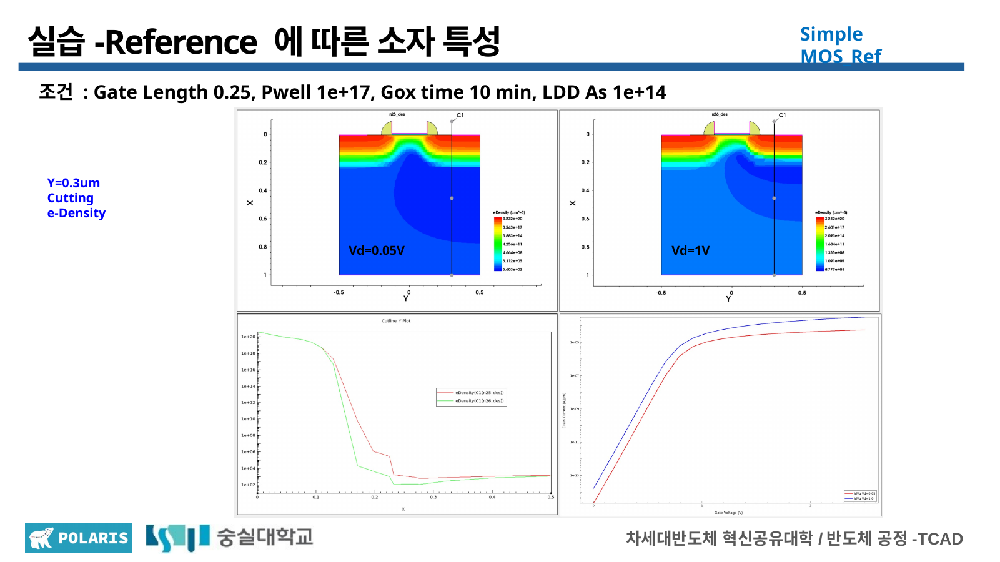
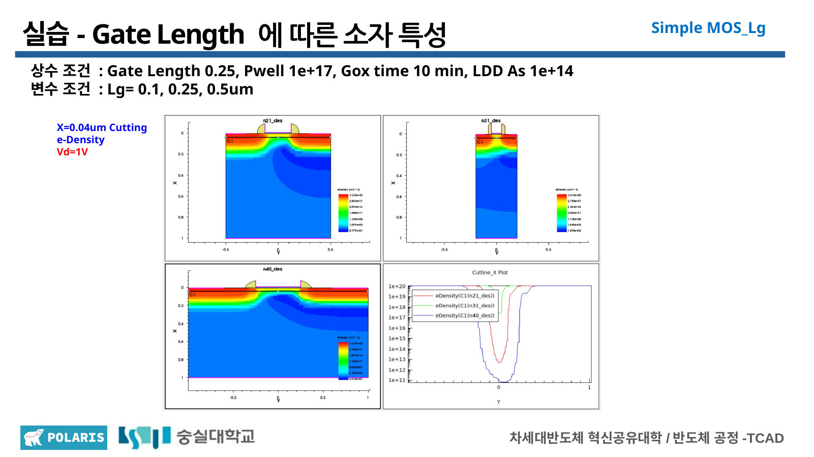
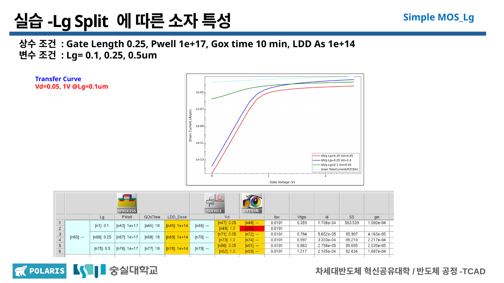
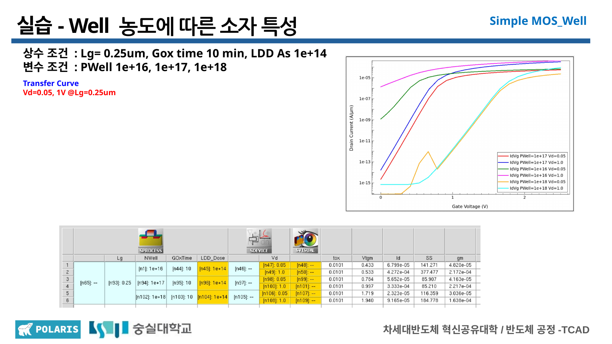
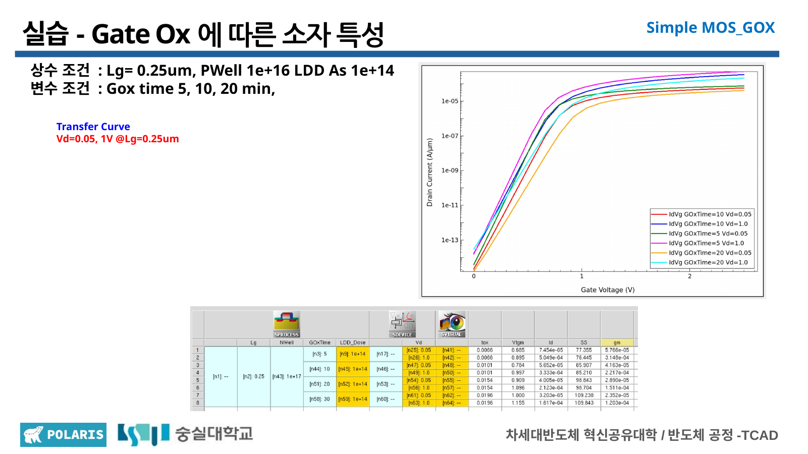
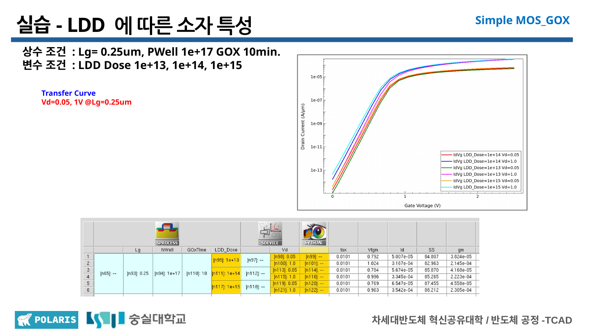

반도체 소자 with TCAD
From semiconductor-device theory to Simple nMOS parameter analysis
반도체 공정 단기강좌에서 다룬 구조 생성 과정을 복습하고, Simple nMOS의 TDR 구조·전자 밀도·cutline profile·transfer curve를 연결해 해석하는 Device TCAD 과정입니다. 현재는 Day 1의 초기 parameter trend comparison까지 기록했습니다.
01 / OVERVIEW
Connecting process structure to device response.
- 공정 단기강좌에서 복습한 doping, oxidation과 구조 형성을 S-Device 결과 해석으로 연결
- Reference 조건에서 NetActive와 electron density 확인
- 한 번에 하나의 parameter만 변경하고 나머지 조건을 고정
- TDR 구조, cutline graph와 transfer curve를 함께 비교
Scope: 본 페이지는 교육용 TCAD 시뮬레이션 기록입니다. 결과는 실제 웨이퍼 측정값이나 실물 소자의 성능 검증 결과가 아니며, raw data가 없는 정량 지표를 추정하지 않습니다.
02 / THEORY
Four concepts behind the Day 1 analysis.
Diffusion and depletion
다수 캐리어 확산으로 공핍층과 내부 전기장이 형성되며, forward와 reverse bias가 접합 장벽과 공핍 폭을 바꿉니다.
Surface condition
Gate bias에 따라 semiconductor surface가 accumulation, depletion, inversion으로 전환되며 channel 형성의 기초가 됩니다.
Off, linear and saturation
Gate와 drain bias에 따라 channel 형성과 전류 경로가 달라지고, saturation에서는 drain 측 pinch-off가 나타납니다.
Pull-up and pull-down
pMOS와 nMOS가 상보적으로 출력을 구동하며, 정적 상태와 switching 구간의 전력 소모 메커니즘이 구분됩니다.
Lecture material: 강의 PPT 원본이나 슬라이드 이미지는 공개하지 않고 학습한 핵심 개념만 새 문장으로 요약했습니다.
03 / REFERENCE
A baseline for controlled comparison.
Reference 조건을 먼저 확인한 뒤 하나의 parameter만 split했습니다. 낮은 drain bias와 높은 drain bias를 구분해 channel의 전자 분포 변화를 비교했습니다.

Reference electron density
Reference 구조에서 Vd 조건에 따른 channel 전자 분포를 비교했습니다.

Gate-length eDensity · Vd 1.0 V
동일한 화면 배열에서 세 gate length 조건의 TDR와 cutline graph를 함께 확인했습니다.
04 / PARAMETER SPLITS
Parameter trend comparison.
0.10 / 0.25 / 0.50 μm
Channel 길이와 drain bias 영향을 함께 비교하고, 정확한 Vth·SS·DIBL 수치는 raw data 확보 후 추가합니다.
1e16 / 1e17 / 1e18 cm⁻³
Well 농도에 따른 channel 형성 조건과 transfer-curve 경향을 비교했습니다.
5 / 10 / 20 min
산화 시간에 따른 구조와 gate coupling 조건의 변화를 transfer curve와 연결했습니다.
1e13 / 1e14 / 1e15 cm⁻²
Drain 인접 저농도 영역의 분포와 전계 완화·직렬저항 trade-off를 이론적 역할과 함께 살펴보았습니다.

Gate-length transfer curves
Gate length 변화에 따른 transfer-curve 경향을 비교했습니다.

P-Well transfer curves
P-Well 농도 변화에 따른 channel 형성 경향을 확인했습니다.

Gate-oxidation transfer curves
산화 시간 변화와 전기적 응답의 연결을 비교했습니다.

LDD-dose transfer curves
LDD dose 변화에 따른 transfer-curve 경향을 확인했습니다.
Interpretation limit: Hot-carrier 수명, 최대 전계, 정확한 산화막 두께와 Vth·SS·DIBL 값은 이번 이미지에서 직접 검증하거나 추정하지 않았습니다.
05 / RESOURCES
Practice files and documentation.
Full GitHub Repository
Day 1 README, reference command와 전체 결과 이미지
VIEW REPOSITORY ↗Complete README
이론 요약, 조건, workflow와 parameter split 해석
VIEW README ↗Day 1 Command File
Workbook에서 제공된 S-Process reference command
VIEW COMMAND ↗Day 1 Result Images
NetActive, eDensity, cutline graph와 transfer curve PNG 19개
VIEW IMAGES ↗